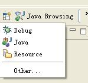
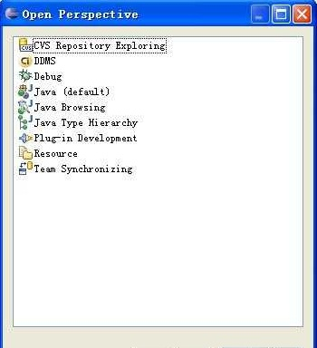
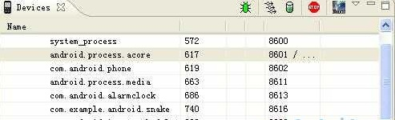
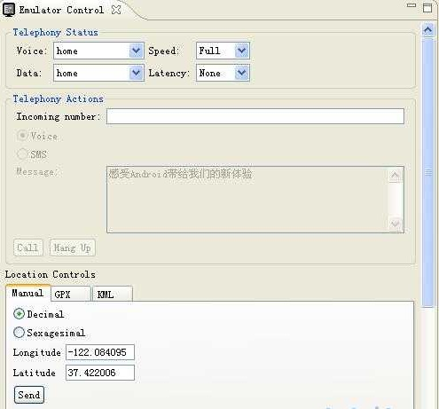
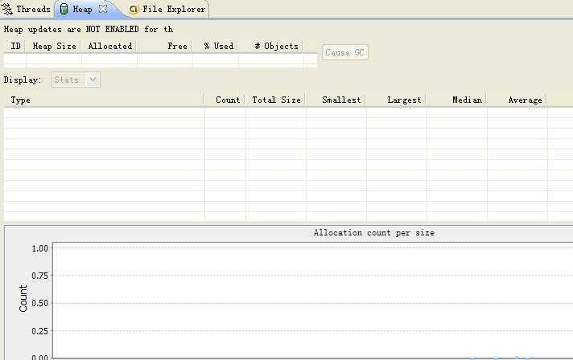
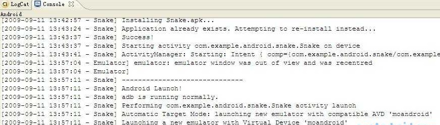
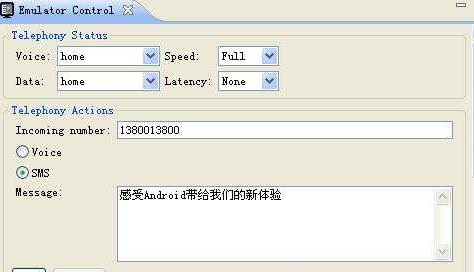
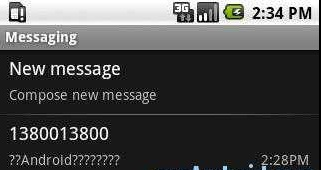
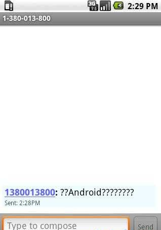

Android DDMS使用
DDMS 的全称是Dalvik Debug Monitor Service，它为我们提供例如：为测试设备截屏，针对特定的进程查看正在运行的线程以及堆信息、Logcat、广播状态信息、模拟电话呼叫、接收SMS、虚拟地理坐标等等。
如何启动 DDMS
DDMS 工具存放在SDK �C tools/路径下，启动DDMS方法如下:
直接双击ddms.bat运行；
在Eclipes调试程序的过程中启动DDMS，在Eclipes中的界面如下：

选择“Other”，界面如下：

双击DDMS就可以启动了。
DDMS对Emulator和外接测试机有同等效用。如果系统检测到它们(VM)同时运行，那么DDMS将会默认指向 Emulator。以上2种启动后的操作有些不一样，建议分别尝试下。
DDMS 的工作原理
DDMS将搭建起IDE与测试终端(Emulator 或者connected device)的链接，它们应用各自独立的端口监听调试器的信息，DDMS可以实时监测到测试终端的连接情况。当有新的测试终端连接后，DDMS将捕捉到终端的ID,并通过adb建立调试器，从而实现发送指令到测试终端的目的。

DDMS监听第一个终端App进程的端口为8600，APP进程将分配8601，如果有更多终端或者更多APP进程将按照这个顺序依次类推。DDMS通过8700端口（”base port”）接收所有终端的指令。
下边通过GUI详细了解DDMS的一些功能
Devices
在GUI的左上角可以看到标签为”Devices”的面板，这里可以查看到所有与DDMS连接的终端的详细信息，以及每个终端正在运行的APP进程，每个进程最右边相对应的是与调试器链接的端口。因为Android是基于Linux内核开发的操作平台，同时也保留了Linux中特有的进程ID，它介于进程名和端口号之间。
在面板的右上角有一排很重要的按键他们分别是Debug the selected process、Update Threads、Update Heap、Stop Process和ScreenShot。
Emulator Control
通过这个面板的一些功能可以非常容易的使测试终端模拟真实手机所具备的一些交互功能，比如：接听电话，根据选项模拟各种不同网络情况，模拟接受SMS消息和发送虚拟地址坐标用于测试GPS功能等。

Telephony Status: 通过选项模拟语音质量以及信号连接模式。
Telephony Actions: 模拟电话接听和发送SMS到测试终端。
Location Control: 模拟地理坐标或者模拟动态的路线坐标变化并显示预设的地理标识，可以通过以下3种方式：
Manual： 手动为终端发送二维经纬坐标。
GPX： 通过GPX文件导入序列动态变化地理坐标，从而模拟行进中GPS变化的数值。
KML： 通过KML文件导入独特的地理标识，并以动态形式根据变化的地理坐标显示在测试终端。
Threads、Heap、File Exporler

这几项，我们在其他开发工具中也经常使用，就在不此详细说明了。通过File Exporler可以查看Android模拟器中的文件，可以很方便的导入/出文件。
Locate、Console

Locate：显示输出的调试信息，详见Android下如何调试程序？；
Console：是Android模拟器输出的信息，加载程序等信息；
使用DDMS模拟发送短信，操作过程如下：
在Emulator Control"Telephony Actions 中输入以下内容

单击发送后，在Android模拟器中打开Messaging，看到下面的短信：

单击新短信，详细查看短信内容：

中文显示为乱码，在未来的开发中，我们必须要注意中文字符的问题。
总结说明：
DDMS是我们开发人员最好的调试工具，它将是每个从事Android开发的人员都不可缺少的。